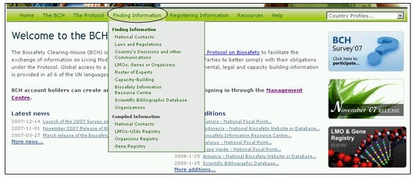
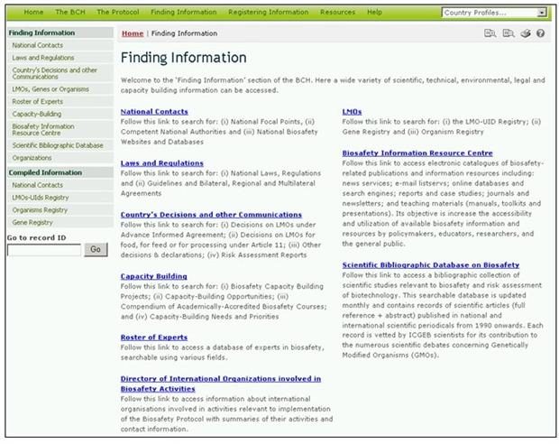

URL: http://bch.cbd.int/database/
Los enlaces a las categorías de información dentro de las bases de datos del Portal Central del BCH, se obtienen a través del menú desplegable de Búsqueda de Información en la barra de navegación.

Figure 39
Cada categoría enumerada en esta página se enlaza con una herramienta de búsqueda que ha sido diseñada para optimizar la ubicación de información específica. También es posible navegar en todas las entradas de cualquier categoría utilizando el botón “Examinar todos los registros”.

Figure 40
En el Módulo 04 se describe en detalle el tipo de datos almacenados en las bases de datos del CIISB y las instrucciones para la búsqueda de información.